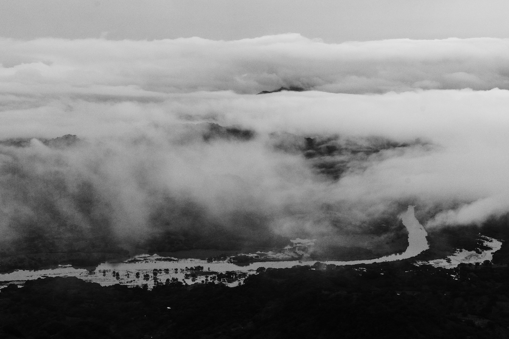

2026’da Popüler Fotoğraf Stil Trendleri: Gerçekçi mi, Sinematik mi?
Fotoğraf sanatı her yıl evrim geçiriyor. Teknolojinin ilerlemesi, sosyal medya platformlarının talepleri, yapay zekâ destekli düzenleme araçları ve izleyici beklentileri fotoğraf stilini doğrudan etkiliyor. 2026 yılında iki ana yaklaşım öne çıkıyor: gerçekçi (realistic) fotoğrafçılık ve sinematik (cinematic) estetik.
Bu yazıda, 2026 fotoğraf trendlerini detaylı şekilde ele alarak şu soruya yanıt arıyoruz: Gerçekçi mi, sinematik mi?
2026 Fotoğraf Trendlerinin Arka Planı
Son yıllarda görsel tüketim alışkanlıkları ciddi biçimde değişti. İzleyiciler bir yandan doğallık ve samimiyet ararken, diğer yandan sinema estetiğini çağrıştıran güçlü hikâyelere ilgi duyuyor.
2026 trendlerini şekillendiren temel faktörler şunlardır:
- Sosyal medya algoritmalarının doğal içerikleri öne çıkarması
- Yapay zekâ destekli düzenleme araçlarının yaygınlaşması
- Görsel hikâye anlatımının marka ve bireysel içeriklerde önem kazanması
Bu ortamda gerçekçi ve sinematik stiller karşıt değil, çoğu zaman birbirini tamamlayan iki yaklaşım hâline geliyor.
Gerçekçi Fotoğrafçılık: Anı Olduğu Gibi Yakalamak
Gerçekçi fotoğrafçılık, 2026 yılında özellikle samimiyet arayan izleyiciler için güçlü bir tercih hâline geldi.
Gerçekçi Fotoğrafçılığın Temel Özellikleri
- Doğal ışık kullanımı
- Minimum düzenleme
- Gerçekçi ten tonları
- Sahnenin olduğu gibi yansıtılması
Neden Bu Kadar Popüler?
İzleyiciler artık aşırı filtreli, yapay görsellerden uzaklaşmak istiyor. Gerçekçi fotoğraflar, izleyiciyle daha güçlü bir bağ kuruyor ve güven hissi yaratıyor.
En Çok Kullanıldığı Alanlar
- Sokak fotoğrafçılığı
- Belgesel projeler
- Doğal portre çekimleri
- Yaşam tarzı ve seyahat blogları
Gerçekçi fotoğrafçılık, izleyiciye tanıdık gelen sahneler sunarak duygusal yakınlık oluşturur.
Sinematik Fotoğrafçılık: Tek Karede Hikâye Anlatmak
Sinematik fotoğrafçılık, bir fotoğraf karesini adeta bir film sahnesine dönüştürmeyi amaçlar. 2026’da özellikle marka iletişimi ve sanatsal projelerde öne çıkmaktadır.
Sinematik Fotoğrafçılığın Özellikleri
- Kontrollü ve dramatik ışık kullanımı
- Güçlü kompozisyon
- Belirgin renk paletleri
- Yoğun post-prodüksiyon
Sinematik Stil Neden Yükselişte?
- Sosyal medya kullanıcıları etkileyici ve dikkat çekici görseller istiyor
- Markalar hikâye anlatımına daha fazla yatırım yapıyor
- Fotoğrafçılar teknik olarak daha donanımlı hâle geliyor
Kullanım Alanları
- Moda çekimleri
- Reklam kampanyaları
- Editorial projeler
- Fine art fotoğrafçılık
Sinematik fotoğraflar, izleyicide hayranlık ve merak uyandırır.
Gerçekçi ve Sinematik Karşılaştırması
Gerçekçi fotoğrafçılık samimiyet sunarken, sinematik fotoğrafçılık duyguyu yoğunlaştırır. 2026’da hangi stilin tercih edileceği tamamen hedefe bağlıdır.
Gerçekçi yaklaşım daha çok özdeşleşme yaratırken, sinematik yaklaşım görsel etkiyi ön plana çıkarır.
2026’nın Yükselen Trendi: Gerçekçi Sinematik Stil
2026’da en dikkat çeken gelişmelerden biri bu iki stilin birleşmesidir.
Bu yaklaşımda:
- Gerçek sahneler kullanılır
- Doğal ışık korunur
- Hafif sinematik renk düzenlemeleri yapılır
Örneğin, doğal bir aile fotoğrafı çekimi film tonlarıyla desteklenerek hem samimi hem etkileyici bir sonuç elde edilir.
Bu stil özellikle düğün fotoğrafçılığı, kişisel marka çekimleri ve lifestyle içeriklerde yaygındır.
Teknolojinin Fotoğraf Stiline Etkisi
Yapay zekâ destekli yazılımlar, fotoğrafçılara büyük esneklik sunuyor. Doğal görünümü bozmadan sinematik etki yaratmak artık çok daha kolay.
Ayrıca mobil kameraların gelişmesi, bu stillerin profesyoneller dışında da yaygınlaşmasını sağlıyor.
2026’da Kazanan Bir Stil Var mı?
2026 yılında tek bir kazanan stil yok. Önemli olan:
- Anlatılmak istenen hikâye
- Hedeflenen izleyici
- Kullanım amacı
Fotoğrafçılık artık teknikten çok, hissettirdiği duygu ile değerlendiriliyor.
Hangi Stili Seçmelisin?
Gerçekçi stil için:
- Doğal ışıkla çalış
- Renkleri aşırı değiştirme
- Anı yakalamaya odaklan
Sinematik stil için:
- Işığı planla
- Renk paleti oluştur
- Kompozisyonu bilinçli kur
2026’da Öne Çıkan Alt Akımlar
- Dokusal gerçekçilik
- Film tonlu renk paletleri
- Hikâye odaklı portreler
- Doğal sahnelerin sinematik kurgulanması
Sonuç olarak, 2026 fotoğrafçılığı bir stil seçmekten çok, doğru duyguyu doğru görselle anlatma sanatı hâline geliyor.